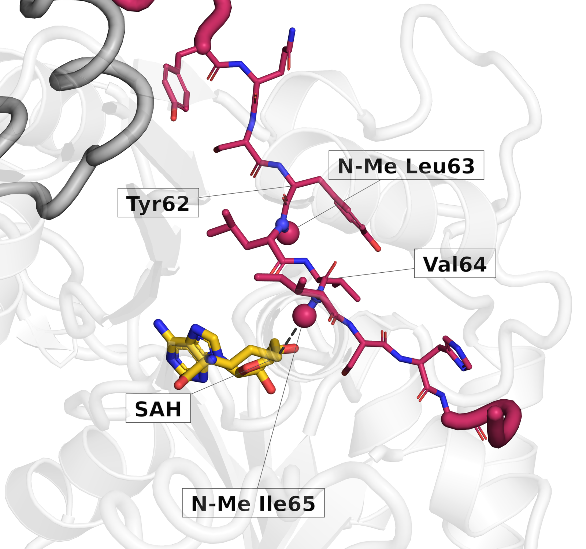
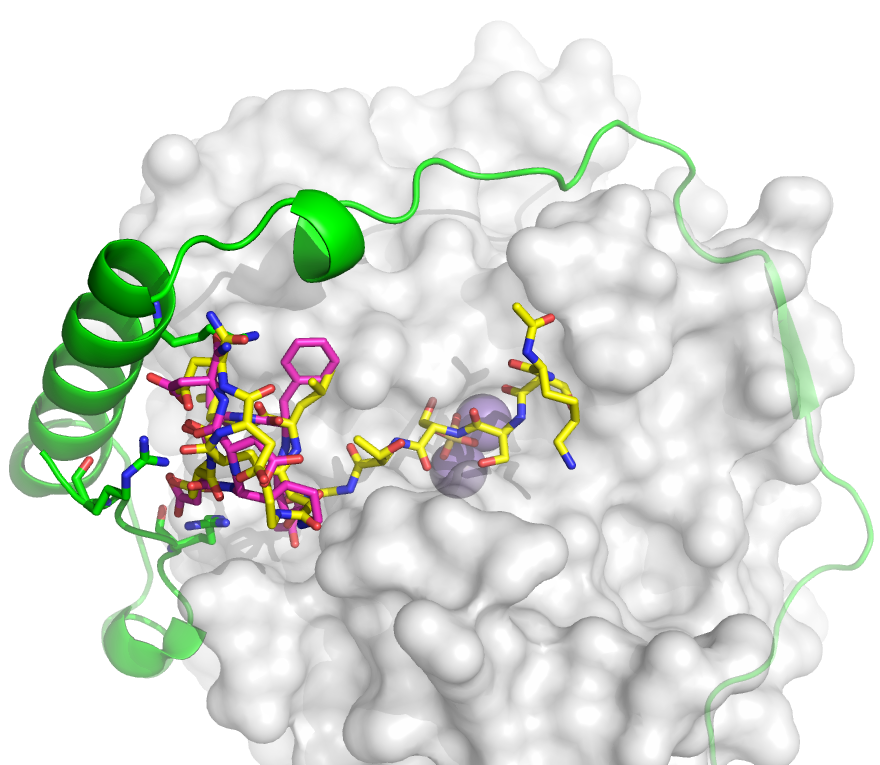
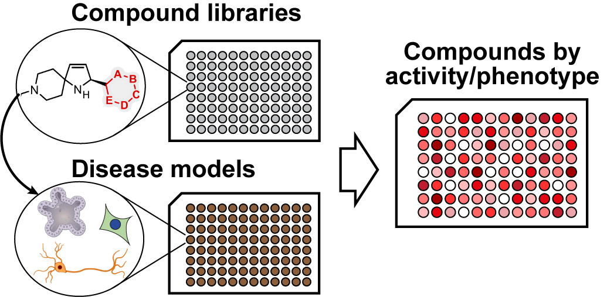

Research
Our programme runs as interlinked early-stage drug discovery workstreams, built around a shared screening pipeline within the Bath Centre for Drug Discovery.
1. Borosin methyltransferases for peptide drugs

Peptides are exceptional drugs when they work, think insulin, Ozempic, Cyclosporin A or enlicitide. However, such examples are few and far between. Our lab aims to change that by using some amazing microbial enzymes to give peptides a better chance to succeed as therapeutics.
Bacterial and fungal borosin N-methyltransferases methylate peptide backbones, resulting in protease-resistant, membrane-permeable natural products. We are developing these enzymes as a biocatalytic toolbox, to install backbone methylation on designed peptides and improve their medicinal chemistry properties.
2. Phosphatases as novel drug targets

Ser/Thr phosphatases are as important to human biology as kinases, yet they have been considered “undruggable” due to difficulties in achieving specificity and affinity. A catalytic subunit such as PP1 forms complexes with one or more regulatory proteins to achieve time-, localisation- and activation-dependent dephosphorylation.
Building on work at the Francis Crick Institute on PP1 and its Phactr and Neurabin regulators (linked to synaptic development, and hyperactivated in epilepsy and coronary artery disease), we use a fusion-phosphatase design that makes these complexes amenable to high-throughput compound screening and structural analysis. Initial experiments using rationally designed peptides established PP1–Phactr1 as a viable drug target. Currently, we are screening small-molecule and peptide libraries to find cell-permeable inhibitors and exploring new modalities such as PhosTACs and covalent targeting.
Mutations in the neuronal phosphatase regulator Phactr1 cause West syndrome, a severe form of childhood epilepsy, and act by producing a dominant, hyperactive phosphatase. We are developing a novel Phactr1-based zebrafish model of epilepsy to study the molecular mechanisms of the disease and to test therapeutic approaches.
3. Screening platforms

Phenotypic high-content screening
Quantitative microscopy and machine-learning image analysis let us discover bioactive compounds and infer their modes of action in disease-relevant cell models. We combine established image-analysis tools with custom models to identify hits, quantify activity, filter generic toxicity and propose mechanisms. We are starting with cell painting and extending to 3D organoids, adipocytes and neurons, and to direct-to-biology workflows.
Photoaffinity chemoproteomics
Cell-based photoaffinity chemoproteomics identifies the targets and binding sites of compounds. It serves both as the target-identification engine for screening hits and as a standalone resource for mapping proteome-wide ligandability.